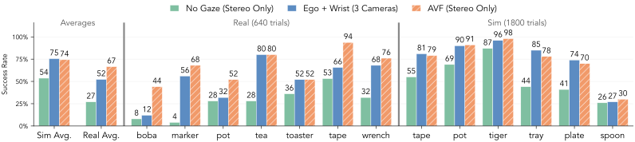
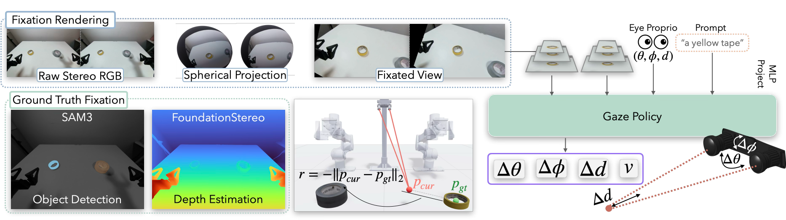
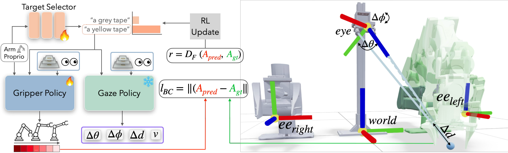
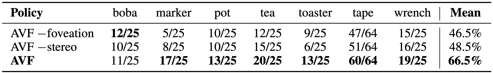

EyeRobot 2.0
Active Visual Fixation for Precise Manipulation without Wrist Cameras
1UC Berkeley 2Amazon FAR 3Stanford University
∗Equal contribution, random order
TL;DR: Active Visual Fixation (AVF) with only a single stereo camera for fine-grained bimanual manipulation
We train a low-level gaze policy with RL to swivel two eye viewpoints onto a 3D fixation point conditioned on a target object. We then co-train a high-level target selector to emit fixation goals based on task progress. The selector is trained with RL and rewarded by the BC gripper policy's accuracy.
Active Visual Fixation for Manipulation
7 Real Tasks
6 Sim Tasks
Experiment Trials


How it works
Gaze Fixation Policy
We first train a gaze policy that continously servos the 2 eyes to fixate on a target object in 3D. We use RL, with the reward coming by estimating the 3D centroid of the target with object detection (SAM3) and stereo depth (FoundationStereo).

BC Gripper Policy with Target Selector
We freeze the gaze policy and train a target selector with RL to select which object to look at during rollout. The target selector is co-trained with the BC gripper policy and rewarded to best improve the gripper policy performance.

Gaze + Gripper Policy Rollouts
Policy Rollouts with Gaze Probabilities
Additional Experiments
Robustness to Distractors
We evaluate AVF with colorful distractor objects randomly scattered on the table. AVF retains significantly more of its original performance than gaze-free stereo baselines (AVF 27%, ego-only 0%). AVF and ego+wrist policies for the tea and wrench tasks degrade by the same amount (AVF 23%, ego+wrist 22%) while on the tape task ego+wrist performance craters (AVF 34%, ego+wrist 0%).
Foveation and Stereo Ablations
We run ablations with AVF without the foveated architecture and AVF without the stereo camera (just mono), and find that both are important for AVF performance.

Failures
Citation
If you use this work or find it helpful, please consider citing: (bibtex)
@inproceedings{[CITEKEY],
title={[PAPER FULL TITLE]},
author={[Author One and Author Two and ...]},
booktitle={[Venue]},
year={[Year]},
url={[Paper URL]}
}